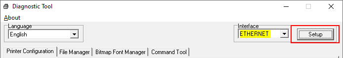
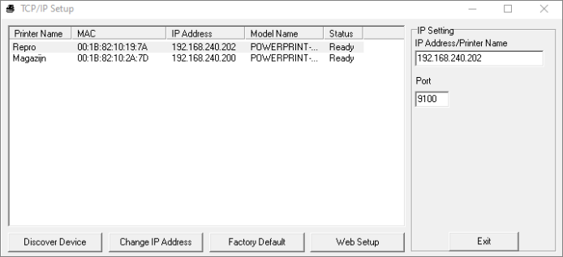
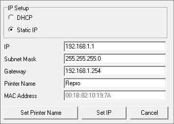
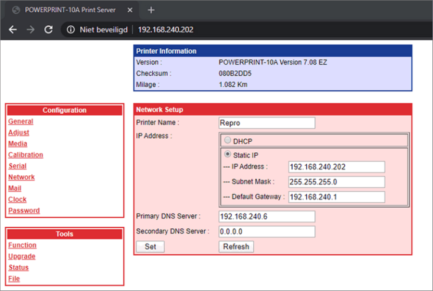

Een vast IP adres kan op 3 manieren ingesteld worden:
DHCP reservering maken in de DHCP server: IP adres wordt dan gekoppeld aan het MAC-adres van de printer waardoor de printer geen ander IPadres meer krijgt.
Opmerking: Deze optie heeft de voorkeur / wordt aanbevolen.
Met de Diagtool:
Kies bovenin bij interface: Ethernet en klik op Setup.

Selecteer de printer en kies voor Change IP Address.

Zet onderstaande instelling op Static IP en voer handmatig een <IP adres> in.
(LET OP: Kies voor een IP adres buiten de DHCP scope om IP conflicten te voorkomen).

In de web-interface van de printer.
Typ het <IP adres> van de printer in een willekeurige browser in.
Klik in het linkermenu op Network.

Om de printer van een vast IP te voorzien, zet de instelling op Static IP en voer een <IP adres> in.
Belangrijk: LET OP: Kies voor een IP adres buiten de DHCP scope om IP conflicten te voorkomen.
Gerelateerde onderwerpen
Copyright ©